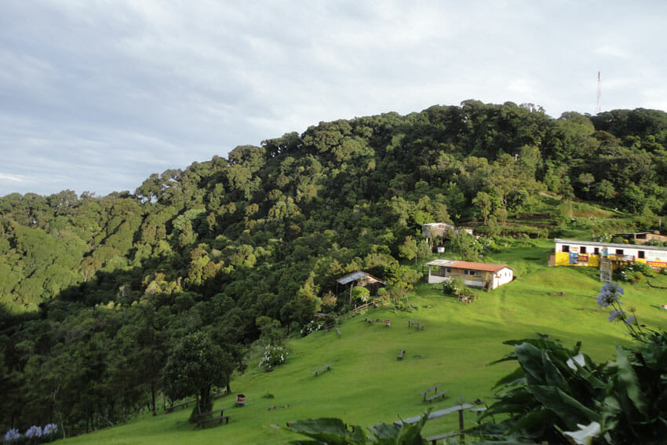
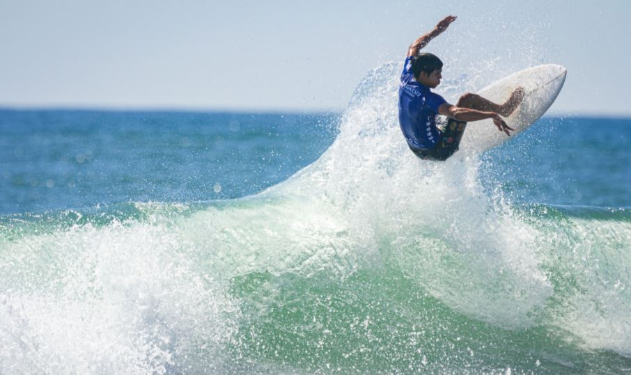
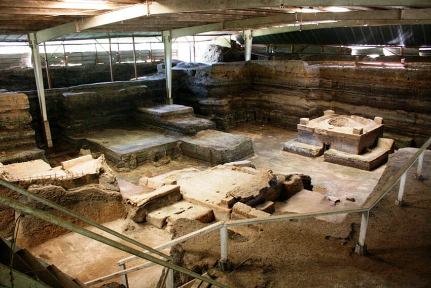

Historia
Travel Xpedition, es una empresa de turismo emisor y receptivo, 100% salvadoreña que
nace en el año 2003 con el objetivo de dar a conocer los lugares mágicos de El Salvador,
gracias a la preferencia de nuestros clientes ampliamos nuestros destinos, extendiendo
así nuestra oferta turística a Centroamérica, México, el Caribe y el resto del mundo.
La empresa de El Salvador Travel Xpedition, SA de CV es legalmente establecida e inscrita
en el Registro Nacional de Turismo con el número 0614062405.12 años de trayectoria
respaldan nuestro compromiso de servir con la mejor calidad e innovar nuestros paquetes
turísticos, esto nos ha permitido ganar la confianza y recomendación de nuestros clientes
nacionales y extranjeros. La oferta turística que ofrecemos abarca tours de playa, montaña,
arqueología, caminatas, campamentos, cultura, aventura, ecoturismo, turismo rural, necro
turismo, city tours, entre otros; servicio de transporte, traslados al aeropuerto, guías
turísticos calificados en diferentes idiomas: español, francés, inglés, y portugués,
reservación de hoteles, renta de autos, paquetes de luna de miel, team building, viajes de
negocios y convenciones, turismo de salud y seguros de viaje.
Además damos comodidad a nuestros clientes que han visitado en nuestro pais El Salvador,
donde han viajado en varios sitios turisticos que les ofrecemos a nuestros clientes.



Bienvenido a nuestros sitios turisticos mas destacados
El Pital
Situado a una elevación de 2.730 msnm corresponde al sitio más alto del Salvador,
un espectacular escenario natural caract erístico por sus bosques de coníferas y
una niebla constante que difumina lastonalidades verdes del paisaje.Su punto más
famoso corresponde a la Peña Rajada, mirador natural sobre una inmensa roca,
desde la cual se observa San Ignacio, La Palma, y parte de la zona fronteriza con
Honduras y Guatemala. Camping, senderismo y diversos tipos de deportes de aventura,
son las actividades principales a realizar en el lugar.
Leer mas
El Tunco (Surf City)
Visitado semanalmente por cientos de turistas locales y extranjeros, el que allá por
los años setentas y ochentas fue un pequeño caserío, al lado de un tranquilo estero;
se ha convertido en un punto de peregrinación obligado para el surfista internacional
y de quienes buscan sumergirse en la bohemia y el desenfado de la cultura surf.
Ubicado a solo 7 kilómetros al occidente del puerto de La Libertad, El Tunco es un
microcosmos donde se respira un ambiente cosmopolita, abunda la diversión y la onda
“chiva”, como se dice localmente para expresar algo buenísimo. El cariño, familiaridad,
y espíritu de servicio de su gente, son como la cereza en el pastel.Esta comunidad surfera
ofrece todo lo imaginable para un viaje espectacular.
Leer mas
Joya de Cerén
Posiblemente la joya arqueológica más importante de El Salvador, un enclave arqueológico
de arquitectura doméstica que evidencia la vida cotidiana de una aldea maya agricultora de
hace 1.600 años. El sitio hoy declarado Patrimonio de la Humanidad por la UNESCO, fue ocupado
desde el año 400 al 600dc, momento en que fue abandonado a causa de la erupción de la Laguna
Caldera. Actualmente un sendero arqueológico rodeado de jardines y cultivos tradicionales
recorre las estructuras aisladas que han logrado ser desenterradas, pudiéndose apreciar entre
otras los antiguos dormitorios, bodegas, cocina y temascal.
Leer mas